Roteiro do Wi-Fi Lab: da primeira rede ao mesh com beamforming
Você vai montar uma rede Wi-Fi do zero no simulador, conectar dispositivos de padrões diferentes, colocar paredes, medir como a SNR vira MCS, taxa e vazão, abrir as formas de onda OFDM e testar interferência, beamforming, mesh e OFDMA. Cada parte tem passos, uma tabela para registrar medidas e perguntas para o relatório.
- configurar SSID, segurança, canal, largura, fluxos e DHCP de um roteador e explicar a sequência de quadros que conecta um cliente;
- prever a SNR de um enlace a partir de potência, perda de percurso, paredes e piso de ruído, e conferir no simulador;
- explicar por que a SNR define o MCS, o MCS define a taxa PHY e por que a vazão TCP é menor que a taxa PHY;
- relacionar multipercurso, prefixo cíclico, equalização e erro de frequência ao que aparece na constelação OFDM;
- planejar canais sem sobreposição, quantificar o ganho de beamforming e o custo de saltos sem fio num mesh.
Marque cada passo clicando no número ao lado dele; o progresso fica salvo neste navegador. As células cinzas das tabelas são editáveis, mas não são salvas: copie os valores para o relatório (ou imprima esta página com Ctrl+P e preencha à mão).
Salve a rede com Exportar JSON ao fim de cada parte (parte1.json, parte2.json…). Se algo sair do controle, Importar JSON volta ao ponto salvo.
O simulador usa perda log-distância, atenuação fixa por parede, BER de M-QAM em AWGN com ganho de código e um ganho ideal de beamforming. Os números servem para comparar situações e entender tendências; um site survey real teria variações de vários dB. Sempre que uma pergunta pedir "por quê", responda com a física do modelo.
0Conhecendo a tela
Abra o Wi-Fi Lab. Se aparecer uma faixa avisando de arquivos de versões diferentes, recarregue com Ctrl+Shift+R.
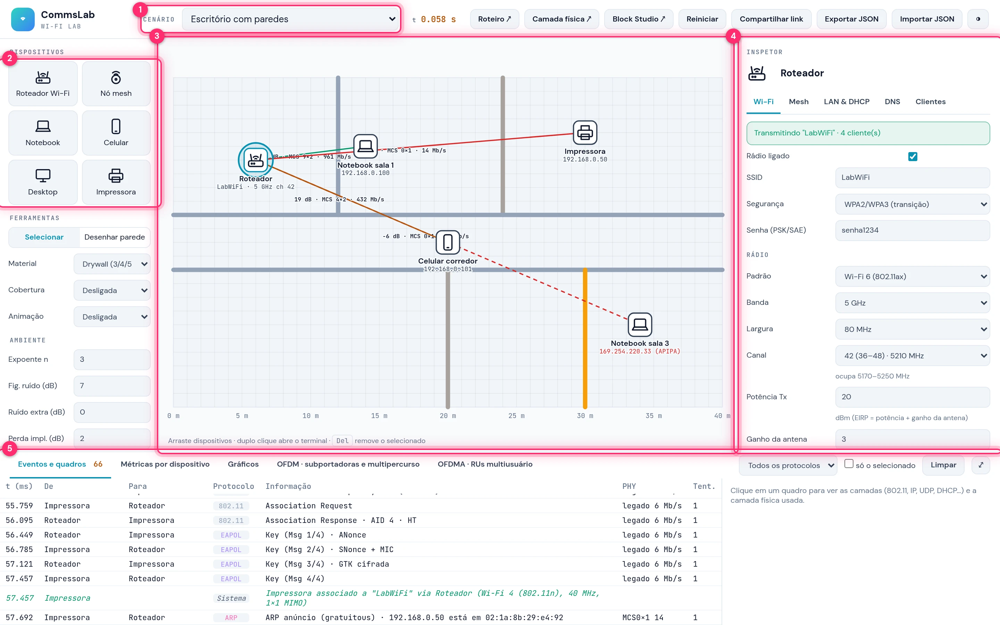
- Percorra a lista CENÁRIO e leia o Objetivo de dois cenários. Os cenários prontos serão usados como referência depois; a rede principal você monta sozinho.
- Clique num espaço vazio da planta: o inspetor mostra a lista de dispositivos e a seção COMO FUNCIONA. Leia os dois parágrafos — eles resumem todo o modelo físico que você vai usar.
- Arraste a borda superior do painel inferior para aumentá-lo e use o botão ⤢ para expandir/recolher. Você vai alternar muito entre planta e painel.
- Em Animação, escolha Lenta. Assim os quadros aparecem voando entre os dispositivos e dá tempo de acompanhar o log.
1Montando a rede do zero
Criar um roteador, configurar a rede sem fio e a LAN, conectar o primeiro cliente e entender cada quadro trocado até ele navegar.
1.1 Planta vazia
- Escolha o cenário Primeira rede Wi-Fi 6 (é o que não tem paredes).
- Clique em cada dispositivo e aperte Del até a planta ficar vazia. No painel Eventos e quadros, clique em Limpar.
- Em AMBIENTE, anote os valores padrão de Expoente n, Fig. ruído, Ruído extra e Perda impl.. Você vai mexer neles na Parte 3 e precisa saber voltar.
1.2 O roteador
- Na paleta, clique em Roteador Wi-Fi. Arraste-o para o centro da planta (≈ 20 m × 12 m).
- Renomeie-o (campo de nome no topo do inspetor) para
AP-Lab-<sobrenome>. - Aba Wi-Fi: defina um SSID próprio (ex.:
Lab-Grupo3), segurança WPA2/WPA3 e uma senha de 8+ caracteres. Mantenha Wi-Fi 6 · 5 GHz · 80 MHz · canal 42 · 2 fluxos · MCS automático. - Anote a Taxa PHY máxima e o número de Subportadoras mostrados no fim da aba. Mude a largura para 20, 40, 80 e 160 MHz e preencha a tabela; depois volte para 80 MHz.
- Aba LAN & DHCP: confira IP do roteador
192.168.0.1/24, faixa DHCP.100–.199, lease e DNS primário. Encurte o lease para 600 s. - Clique em Página de administração. Entre com
admin/admin, percorra Status, Rede sem fio, LAN e DHCP e Análise de canais. Em Sistema, troque a senha de administrador — por que um roteador de fábrica comadmin/adminé um risco?
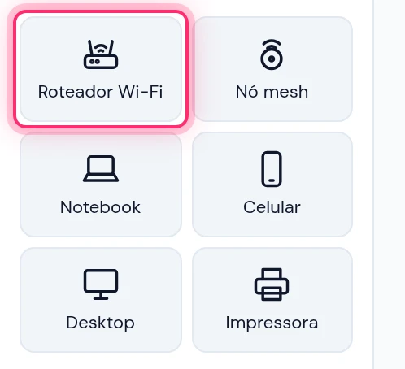
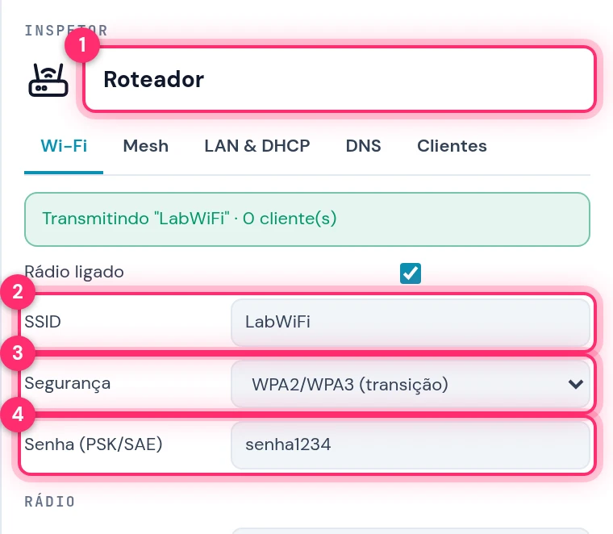
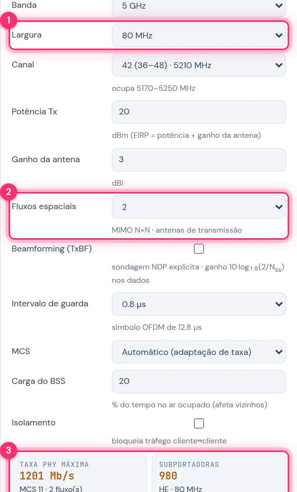
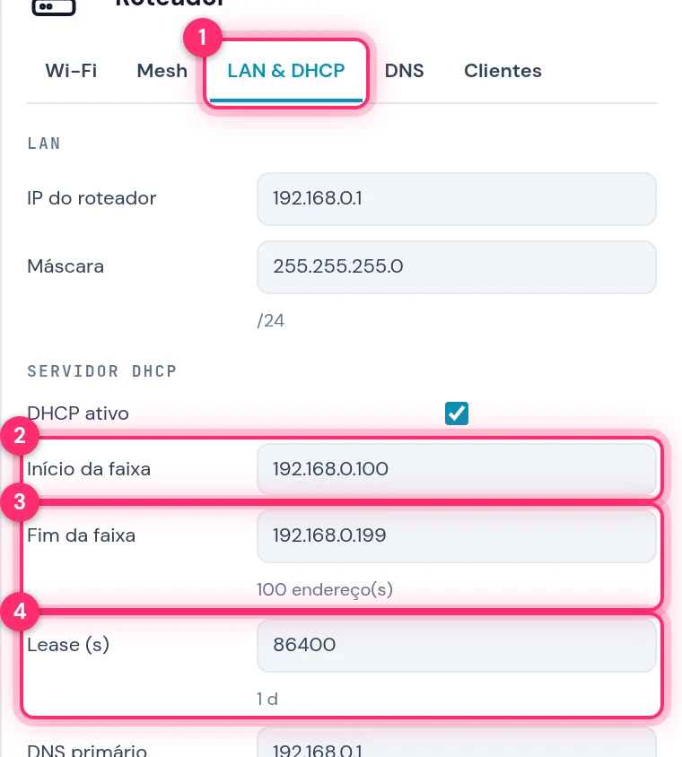
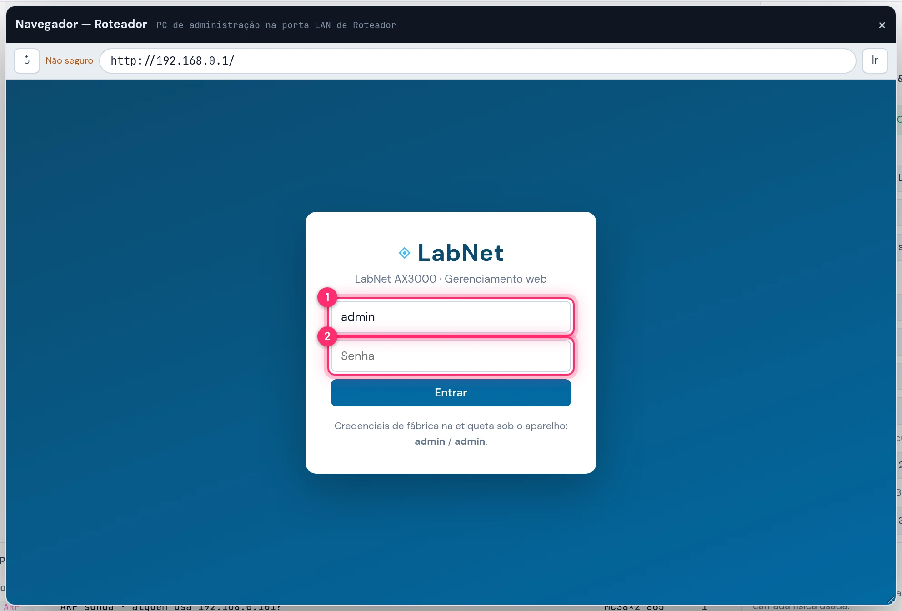
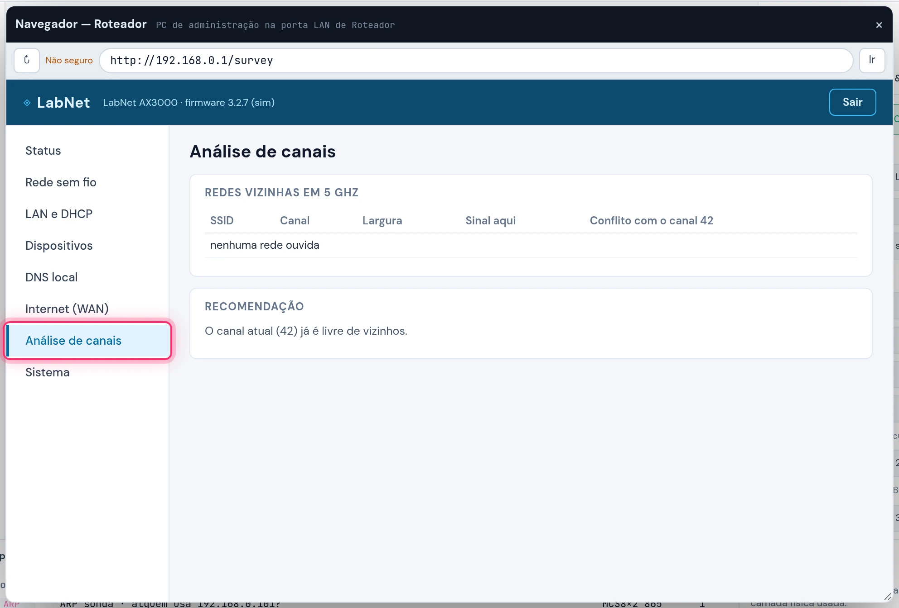
| Largura (MHz) | Subportadoras | Taxa PHY máxima (Mb/s) | Taxa ÷ largura (b/s/Hz) |
|---|---|---|---|
| 20 | |||
| 40 | |||
| 80 | |||
| 160 |
A taxa dobra exatamente quando a largura dobra? Use a fórmula R = Nss·Nsd·log₂M·Rc/(Tsym+GI) e o número de subportadoras de dados para explicar a diferença.
1.3 O primeiro cliente
- Adicione um Notebook a uns 6 m do roteador. Ele aparece como desconectado (SSID vazio).
- Na aba Wi-Fi do notebook, veja REDES VISÍVEIS: anote RSSI, banda, canal e largura da sua rede.
- Digite uma senha errada no campo Senha, preencha o SSID e clique Conectar. No log, filtre por EAPOL: em que mensagem do 4-way handshake a conexão falha, e por quê?
- Corrija a senha e conecte. Limpe o filtro e, com só o selecionado marcado, copie para o relatório a sequência completa de quadros até o cliente ter IP.
- Clique em cada quadro e veja as camadas no painel à direita do log. Identifique: Probe Request/Response, Authentication, Association Request/Response, as 4 mensagens EAPOL, DHCP DISCOVER → OFFER → REQUEST → ACK e o ARP. Para cada um, anote a coluna PHY (taxa usada).
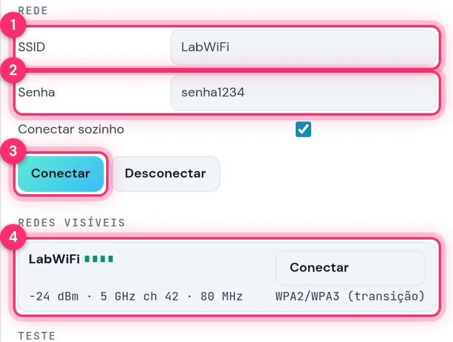
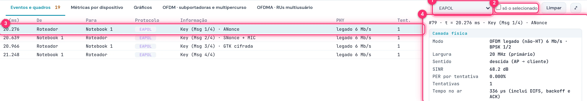
Os quadros de gerência e o DHCP broadcast saem a uma taxa PHY muito menor que os dados. Por quê o AP faz isso? O que aconteceria com um cliente distante se ele usasse MCS alto nos beacons?
1.4 Testes de rede pelo terminal
Dê duplo clique no notebook (ou botão Terminal). Rode e salve a saída de:
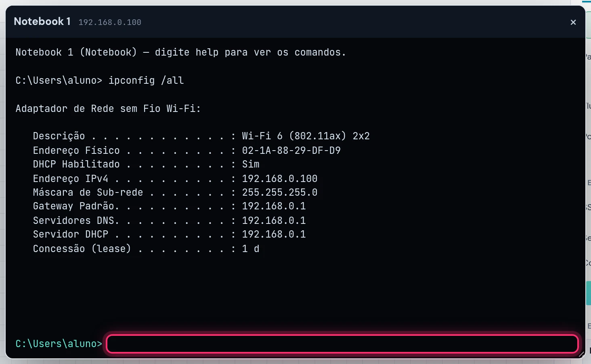
- No
ipconfig /all, identifique IP, máscara, gateway, DNS, servidor DHCP e validade do lease. Bate com a aba LAN & DHCP? - Em
netsh wlan show interfaces, anote o padrão, canal, sinal e taxas de recepção/transmissão. - Rode
ipconfig /releasee depoisipconfig /renew, observando no log que o DHCP agora faz só REQUEST → ACK ou o DORA inteiro. Explique. - No roteador, abra o Console e rode
show clients,show leaseseshow wifi. - Exporte a rede como
parte1.json.
2Conectando dispositivos diferentes
Ver como o padrão do rádio e o número de antenas do cliente limitam o enlace, e configurar endereçamento estático e DNS local.
- Adicione um Celular, um Desktop e uma Impressora, todos a ~8 m do roteador, e conecte-os à sua rede. Para o celular use o terminal:
nmcli dev wifi connect Lab-Grupo3 password <senha>. - Para cada cliente, abra a aba Enlace e preencha a tabela abaixo (padrão negociado, largura, fluxos, MCS, taxa PHY, vazão).
- A impressora é Wi-Fi 4 (1 antena). Na aba IP, coloque-a em modo Estático com
192.168.0.50/24, gateway e DNS192.168.0.1. Por que dar IP fixo fora da faixa DHCP? - No roteador, aba DNS, adicione o registro
impressora.lan → 192.168.0.50. Do notebook:ping impressora.lan. Veja também os nomes automáticos que o DHCP criou. - Coloque o desktop em estático com o mesmo IP da impressora. O que o inspetor mostra? Qual quadro ARP denuncia o conflito? Desfaça.
- Marque Firewall bloqueia ping no celular e faça
pingnele a partir do notebook. Depois ligue Isolamento no roteador e repita com o firewall desligado. Qual é a diferença entre as duas falhas? - Mude o celular para 1 fluxo (aba Wi-Fi do cliente) e veja a taxa cair. Mude o padrão do notebook para Wi-Fi 5 e depois de volta para Wi-Fi 6.
- Exporte
parte2.json.
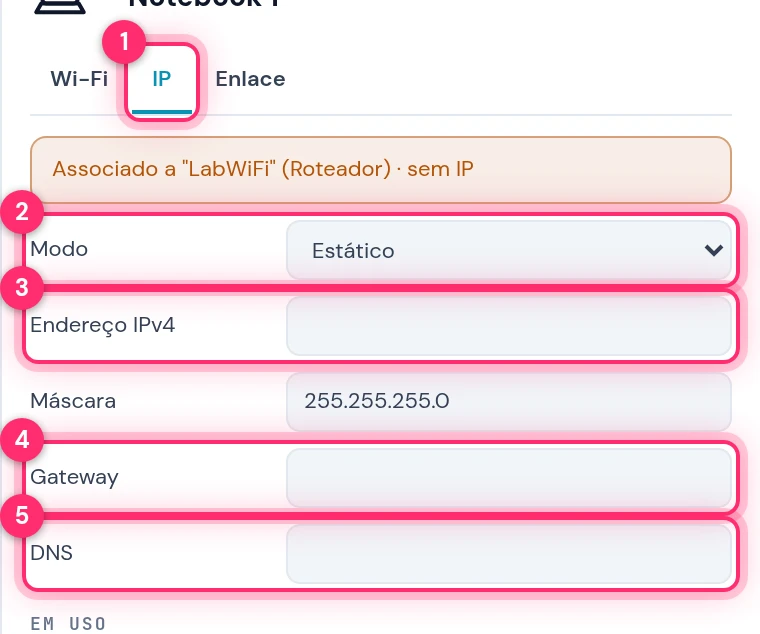
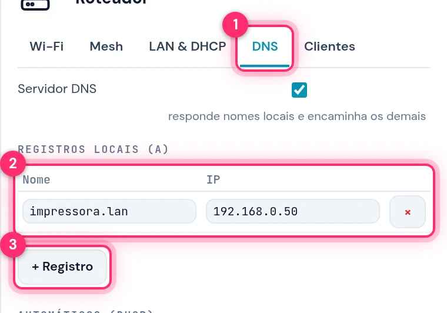
| Cliente | Padrão negociado | Largura | Nss | SINR desc. (dB) | MCS desc. | Taxa PHY (Mb/s) | Vazão (Mb/s) |
|---|---|---|---|---|---|---|---|
| Notebook (Wi-Fi 6, 2×2) | |||||||
| Celular (Wi-Fi 6, 2×2) | |||||||
| Desktop (Wi-Fi 5) | |||||||
| Impressora (Wi-Fi 4, 1×1) |
Os quatro estão à mesma distância, mas com taxas muito diferentes. Separe as causas: padrão (MCS máximo, símbolo OFDM, largura máxima), número de fluxos e potência de transmissão do cliente (que afeta só a subida — confira com o seletor ↑ Subida em Métricas por dispositivo).
Em 2,4 GHz o Wi-Fi 4 não atrapalha só a si mesmo: um cliente lento ocupa o canal por mais tempo para enviar o mesmo pacote. Explique a "anomalia de desempenho" do 802.11 com os números da sua tabela.
3Distância, bandas e paredes
Verificar o balanço de enlace (link budget) do modelo, medir a atenuação de cada material e comparar 2,4, 5 e 6 GHz.
3.1 Curva de distância (sem paredes)
- Deixe só o roteador e o notebook. Coloque o roteador em (5, 12) e o notebook na mesma linha horizontal (y = 12).
- Confirme o ambiente padrão (n = 3, NF = 7 dB, ruído extra 0, perda de implementação 2 dB). Leve o notebook a 2, 5, 10, 15, 20, 25 e 30 m. Em cada ponto, anote da aba Enlace: perda, RSSI, ruído, SINR, MCS, taxa PHY e vazão.
- Calcule à mão o RSSI e a SNR esperados para 10 m (Ptx = 20 dBm, G = 3 dBi, n e NF do ambiente) e compare.
- Abra Gráficos e observe o card Taxa × distância: seus pontos devem cair sobre a curva. Cada degrau é uma troca de MCS.
- Mude o Expoente n de 3 para 2 (espaço livre) e para 4 (ambiente muito obstruído). A que distância o MCS cai abaixo de 5 em cada caso?
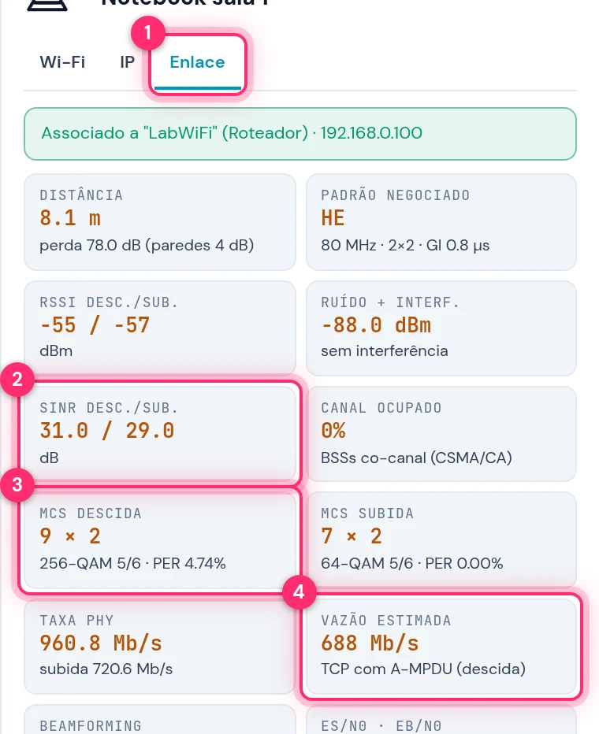
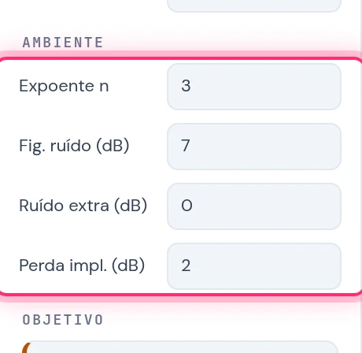
| d (m) | Perda (dB) | RSSI (dBm) | Ruído (dBm) | SINR (dB) | MCS × Nss | Taxa PHY | Vazão |
|---|---|---|---|---|---|---|---|
| 2 | |||||||
| 5 | |||||||
| 10 | |||||||
| 15 | |||||||
| 20 | |||||||
| 25 | |||||||
| 30 |
Quanto a perda aumenta quando a distância dobra (de 5 para 10 m, de 10 para 20 m)? Mostre que o valor é 10·n·log₁₀2 ≈ 3·n dB.
3.2 Paredes e materiais
- Fixe o notebook a 10 m. Em FERRAMENTAS, escolha Desenhar parede, material Drywall, e arraste na planta uma parede vertical entre o roteador e o notebook (ex.: de (10, 4) a (10, 20)).
- Volte a Selecionar e clique na parede: o inspetor mostra a atenuação em 2,4/5/6 GHz e permite trocar o material.
- Troque o material para Vidro, Tijolo, Concreto e Metal, anotando SINR e MCS em cada caso.
- Coloque duas paredes de tijolo em série. A perda soma?
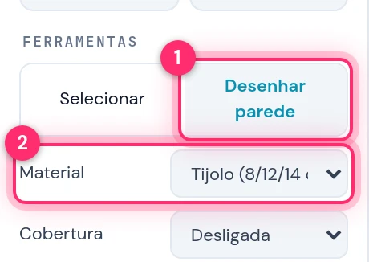
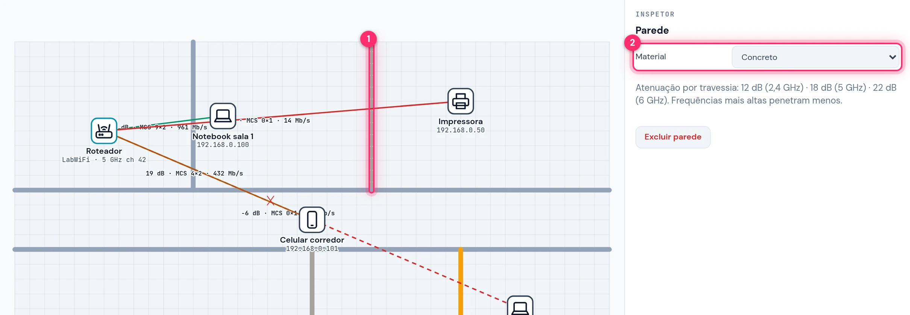
| Material | Atenuação 5 GHz (dB) | SINR (dB) | MCS × Nss | Vazão (Mb/s) |
|---|---|---|---|---|
| Sem parede | 0 | |||
| Drywall | ||||
| Vidro | ||||
| Tijolo | ||||
| Concreto | ||||
| Metal |
3.3 Mapa de cobertura e bandas
- Desenhe uma planta com pelo menos 3 salas: use drywall para divisórias, tijolo para paredes externas e uma parede de concreto (poço de elevador, por exemplo).
- Selecione o roteador e ligue Cobertura → SINR (dB). Tire um print. Repita com MCS máximo.
- Mude o roteador para 2,4 GHz / 20 MHz / canal 6 e depois 6 GHz (exige padrão Wi-Fi 6E ou 7). Tire prints do mapa nas três bandas.
- Arraste o roteador pela planta com o mapa ligado e encontre a posição que cobre todas as salas com MCS ≥ 7. Anote a posição.
- Aumente Ruído extra para 10 dB. Quanto o raio de cobertura encolhe? Volte a 0.
- Exporte
parte3.json.
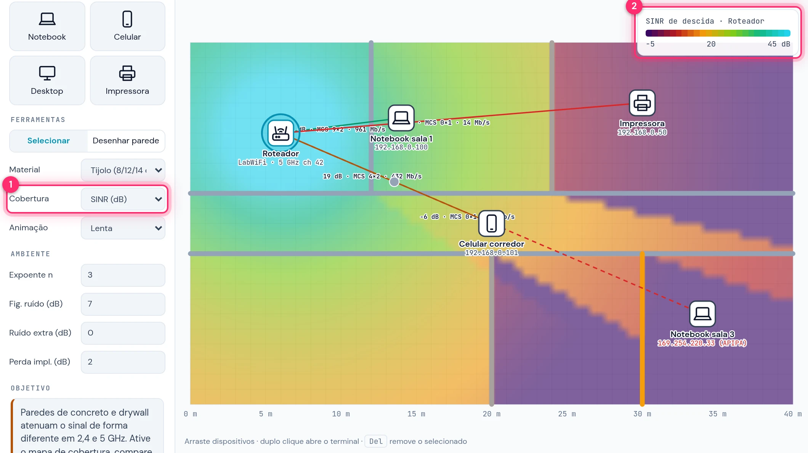
2,4 GHz chega mais longe e atravessa melhor as paredes; por que, então, os roteadores modernos preferem 5 e 6 GHz? Use pelo menos três argumentos: largura de canal disponível, número de canais sem sobreposição e interferência de vizinhos.
Por que o padrão não manda simplesmente aumentar a potência de transmissão do AP para 30 dBm? Pense no enlace de subida (o celular transmite com 15 dBm) e na interferência com os vizinhos.
4Da SNR à vazão: MCS, PER e Shannon
Construir a curva de adaptação de enlace, ver o limite de Shannon e entender onde a taxa PHY se perde até virar vazão TCP.
4.1 Varredura de SNR
- No notebook, aba Wi-Fi → TESTE, marque SNR forçada. Ela substitui o canal físico nos dois sentidos.
- Varie a SNR de 0 a 45 dB em passos de 5 dB. Em cada valor, anote MCS, modulação, taxa de código, PER, taxa PHY e a vazão do
iperf3 -c 192.168.0.1. - Na aba Enlace, observe a CONSTELAÇÃO RECEBIDA e o gráfico PER × SNR a cada valor: como a nuvem de pontos se compara às fronteiras de decisão?
- Abra Gráficos: nos cards BER × Eb/N0 e Eficiência espectral × SNR, localize o ponto do notebook. Meça o gap (em dB) entre o degrau do MCS em uso e a curva de Shannon.
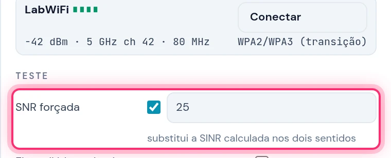
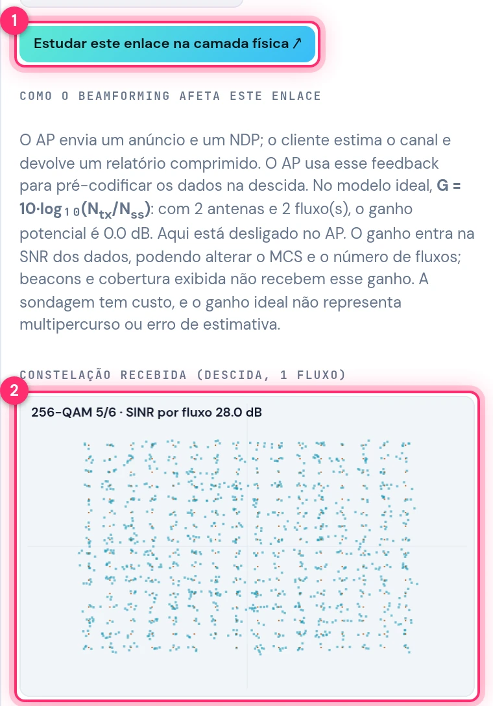
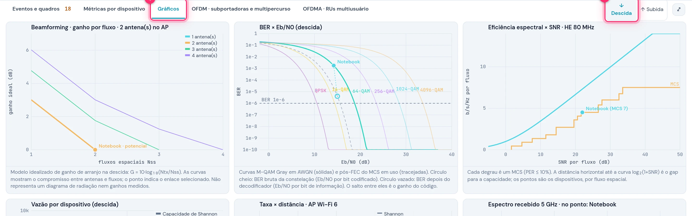
| SNR (dB) | MCS | Modulação / Rc | PER | Taxa PHY | Shannon C | Vazão iperf3 | Vazão / PHY |
|---|---|---|---|---|---|---|---|
| 0 | |||||||
| 5 | |||||||
| 10 | |||||||
| 15 | |||||||
| 20 | |||||||
| 25 | |||||||
| 30 | |||||||
| 35 | |||||||
| 40 | |||||||
| 45 |
4.2 MCS fixo: o que a adaptação evita
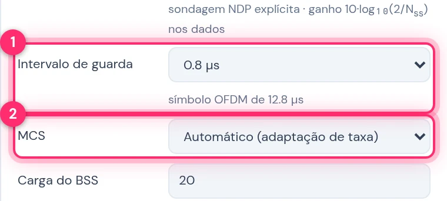
- Com SNR forçada em 25 dB, mude o MCS do roteador de "Automático" para MCS 11 (1024-QAM 5/6).
- Rode
iperf3e observe no log a coluna Tent. (tentativas) e as retransmissões. Qual é a vazão? - Suba a SNR de 1 em 1 dB até a PER cair abaixo de 10 %. Anote o limiar. Compare com o limiar em que o MCS automático escolhia o 11.
- Fixe agora MCS 0 com SNR de 40 dB. O enlace é confiável, mas qual é o desperdício?
- Volte para Automático e desmarque a SNR forçada.
4.3 Intervalo de guarda, largura e fluxos
- No roteador, troque o Intervalo de guarda entre 0,8, 1,6 e 3,2 µs. Calcule a perda de taxa esperada com Tsym = 12,8 µs e confira.
- Com o notebook longe (SINR ≈ 15 dB), compare 20, 40, 80 e 160 MHz. A largura maior aumenta a taxa ou diminui? Explique com o piso de ruído (cada duplicação da banda custa 3 dB de SNR).
- Com o notebook perto (SINR > 35 dB), repita. Onde está o ponto de troca?
- Compare 1 e 2 fluxos no AP com o notebook a 5 m e a 25 m. Com 2 fluxos a potência se divide: quando 1 fluxo com MCS mais alto vence 2 fluxos com MCS mais baixo?
Na tabela 4.1, a razão vazão/PHY nunca chega a 100 %. Liste as fontes de overhead indicadas no card Vazão por dispositivo (preâmbulo, DIFS, backoff, Block Ack, retransmissões, canal ocupado) e diga quais pesam mais em pacotes pequenos.
O cenário pronto Wi-Fi 7 em 6 GHz (320 MHz) mostra o 4096-QAM aparecendo só com 1 fluxo. Abra-o, reproduza e explique em termos de SNR por fluxo.
5Formas de onda: dentro do símbolo OFDM
Ver como os bits viram subportadoras, como o multipercurso distorce o sinal e por que o prefixo cíclico, a estimação de canal e o equalizador são necessários.
Selecione o notebook e abra a aba OFDM · subportadoras e multipercurso. Com Seguir enlace marcado, a numerologia, largura, GI, modulação e SNR vêm do enlace real; desmarque para controlar tudo à mão.
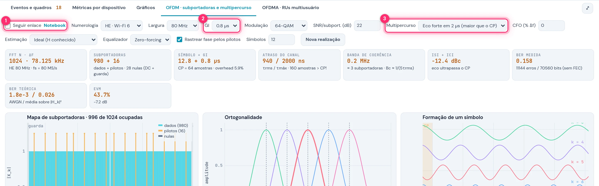
5.1 Anatomia do sinal (sem multipercurso)
- Desmarque Seguir enlace. Escolha Wi-Fi 6, 20 MHz, GI 0,8 µs, 16-QAM, SNR 30 dB, Multipercurso Sem multipercurso (só AWGN).
- Mapa de subportadoras: conte dados, pilotos e nulas. Onde ficam a DC e as bandas de guarda?
- Ortogonalidade: veja os sincs; no instante de amostragem todas as vizinhas valem zero.
- Formação de um símbolo: algumas subportadoras e a soma. Note a região do CP: ela é uma cópia do final do símbolo.
- Espectro transmitido: topo plano e queda nas guardas. Troque para Wi-Fi 5 e compare a largura de cada subportadora.
- Sinal no tempo: compare transmitido × recebido. O sinal OFDM parece ruído — por que isso implica PAPR alto e amplificadores caros?
5.2 Multipercurso e prefixo cíclico
- Percorra os perfis TGn B → C → D → E → F. Para cada um, anote τrms, Bc (título do card Resposta em frequência) e a BER total (card BER por subportadora).
- Observe a SNR por subportadora: a SNR média é a mesma, mas algumas subportadoras caem em vales profundos. Elas dominam a BER — por quê?
- Escolha Dois raios: eco em 400 ns. Conte os vales em |Hk|² dentro de 20 MHz e compare com o espaçamento esperado 1/400 ns = 2,5 MHz.
- Escolha Eco forte em 2 µs (maior que o CP) com Wi-Fi 6 e GI 0,8 µs. No card Sinal no tempo aparecem faixas vermelhas de ISI. Anote EVM e BER.
- Mude o GI para 3,2 µs. A ISI some? Anote EVM e BER. Agora mude a numerologia para Wi-Fi 5 (GI máximo 0,8 µs): é possível salvar esse enlace?
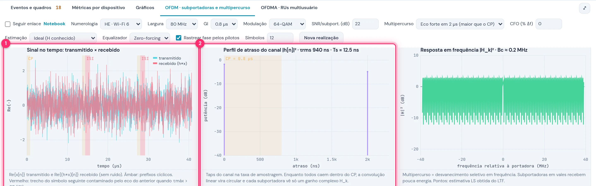
| Perfil | τrms (ns) | Bc (MHz) | EVM (%) | BER | ISI? |
|---|---|---|---|---|---|
| AWGN | 0 | — | |||
| TGn B | |||||
| TGn D | |||||
| TGn F | |||||
| Eco 2 µs · GI 0,8 | |||||
| Eco 2 µs · GI 3,2 |
5.3 Estimação, equalização e sincronismo
- Com TGn D e 16-QAM, coloque Equalizador: Nenhum. Compare Constelação recebida e Constelação equalizada: cada subportadora gira e escala de forma diferente.
- Mude para Zero-forcing e depois MMSE, com SNR 30 dB e depois 10 dB. Em qual SNR o MMSE se destaca? Olhe as subportadoras nos vales (cores na constelação).
- Troque Estimação de Ideal para LTF (mínimos quadrados). Os pontos da estimativa aparecem sobre |Hk|²; quanto a EVM piora?
- Coloque CFO em 2 %, 5 % e 10 % de Δf. Veja o vazamento (ICI) no card Ortogonalidade e a constelação girar.
- Marque Rastrear fase pelos pilotos. Que parte do erro os pilotos corrigem e que parte (a ICI) continua?
- Compare CFO de 5 % em Wi-Fi 5 e Wi-Fi 6: o mesmo desvio em Hz é uma fração maior de Δf no Wi-Fi 6. Por que isso torna o Wi-Fi 6 mais exigente com o oscilador?
- Use Nova realização várias vezes no perfil TGn D: a BER varia muito entre realizações? Por quê?
- Marque Seguir enlace de novo, arraste o notebook para longe na planta e acompanhe a constelação se espalhar em tempo real.
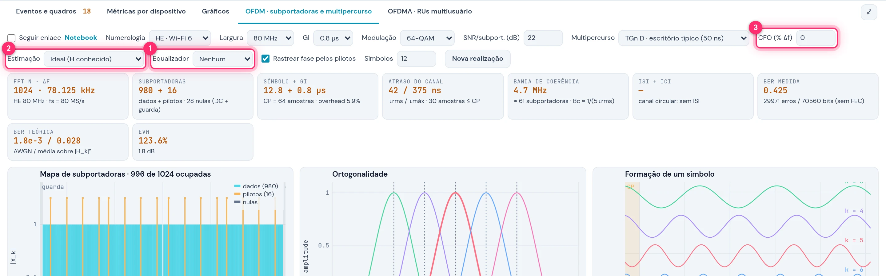
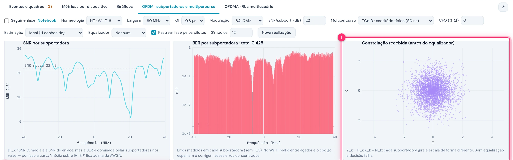
O Wi-Fi 6 quadruplicou o tamanho do símbolo (3,2 → 12,8 µs). Explique as duas vantagens (overhead relativo do GI menor e GI longo para ambientes externos) e a desvantagem (sensibilidade a CFO e ruído de fase).
A BER por subportadora mostra erros concentrados nos vales. Como o entrelaçador e o código convolucional/LDPC resolvem isso no Wi-Fi real? (Dica: Parte 6, aula Codificação.)
6Laboratório de camada física
Aprofundar a modulação, o pulso, a BER, o código e o desvanecimento que estão por trás do número "MCS" visto na rede.
Na aba Enlace de qualquer cliente, clique em Estudar este enlace na camada física ↗: a página abre na aula MCS & Shannon com a SNR, o padrão e as antenas desse enlace. As demais aulas estão no menu do topo.
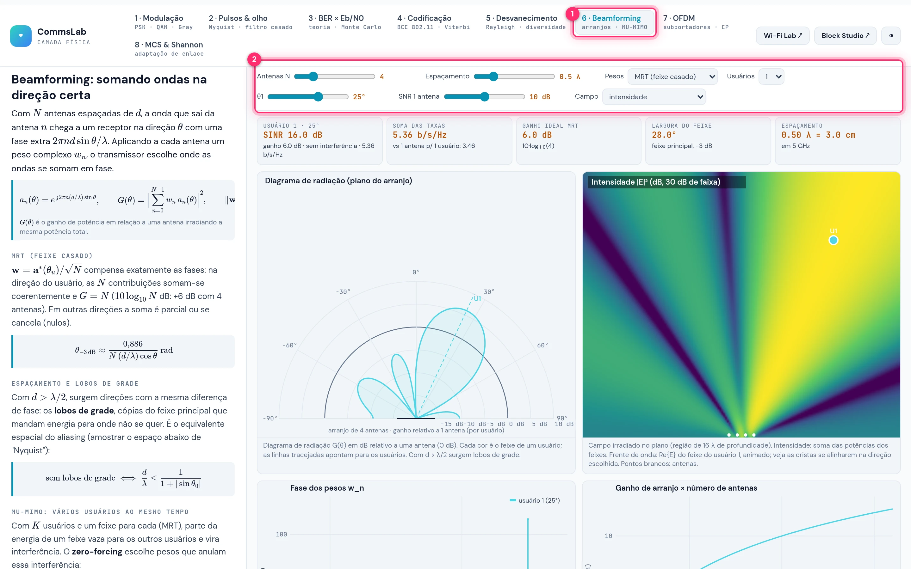
| Aula | O que mexer | O que registrar |
|---|---|---|
| 1 · Modulação | Família PSK/QAM, ordem M, rótulos Gray × binário; o gráfico de forma de onda mostra I(t), Q(t) e s(t). | Em que ordem o PSK deixa de compensar frente ao QAM? Quanto o Gray reduz a BER na mesma SNR? Em PSK a amplitude de s(t) é constante; em QAM, não. |
| 2 · Pulsos & olho | Pulso TX, filtro RX, roll-off α, erro de tempo τ. | Print do olho aberto e fechado. Banda ocupada (1+α)·Rs/2 para α = 0,2 e 1. Efeito de τ na ISI. |
| 3 · BER × Eb/N0 | Esquemas exibidos, canal AWGN × Rayleigh. | Eb/N0 para BER 10⁻⁵ de BPSK, 16-QAM e 64-QAM; inclinação em Rayleigh; limite −1,59 dB. |
| 4 · Codificação | Modulação, decisão dura × suave, LDPC, modelo do simulador. | Ganho de codificação em BER 10⁻⁴ para R = 1/2, 2/3, 3/4, 5/6. Ganho da decisão suave. |
| 5 · Desvanecimento | Ramos L, MRC × seleção, Doppler fd, SNR média. | Probabilidade de outage a −10 dB para L = 1, 2, 4. Por que mais antenas no AP ajudam mesmo com 1 fluxo. |
| 6 · Beamforming | Antenas N, espaçamento d, pesos MRT/ZF, usuários. | Use na Parte 8. |
| 7 · OFDM | Teoria e deduções da Parte 5. | Revise antes do relatório da Parte 5. |
| 8 · MCS & Shannon | Padrão, largura, GI, fluxos, SNR por fluxo. | Confira a tabela 4.1 contra os degraus e a curva PER × SNR. |
7Interferência e planejamento de canais
Distinguir interferência de canal adjacente (soma ao ruído) de compartilhamento co-canal (divide o tempo no ar) e planejar canais.
- Parta de
parte2.json. Coloque seu AP em 2,4 GHz / 20 MHz / canal 6 e reconecte os clientes se necessário. O desktop Wi-Fi 5 vai cair — por quê? (Veja as bandas suportadas na aba Wi-Fi dele.) - Adicione dois roteadores "vizinhos" a ~10 m do seu, com SSIDs próprios (
VizinhoA,VizinhoB), em 2,4 GHz / 20 MHz, canais 3 e 6, e Carga do BSS de 60 %. Cada roteador novo já vem com sua sub-rede (192.168.1.x, 192.168.2.x). - No notebook, aba Enlace: anote Ruído + interf., SINR, Canal ocupado, MCS e vazão (
iperf3 -c 192.168.0.1). - Abra Gráficos → Espectro recebido: veja as máscaras espectrais se sobrepondo.
- Na página de administração do seu roteador, abra Análise de canais. Qual canal ela recomenda?
- Reconfigure os vizinhos para 1 e 11 (mantendo o seu no 6). Repita as medidas.
- Coloque os três no canal 6. A SINR melhora ou piora em relação ao caso 1/3/6? E o canal ocupado?
- Mova tudo para 5 GHz em canais de 80 MHz diferentes (ex.: 42, 58, 155). Repita.
- Compare com o cenário pronto Interferência em 2,4 GHz.
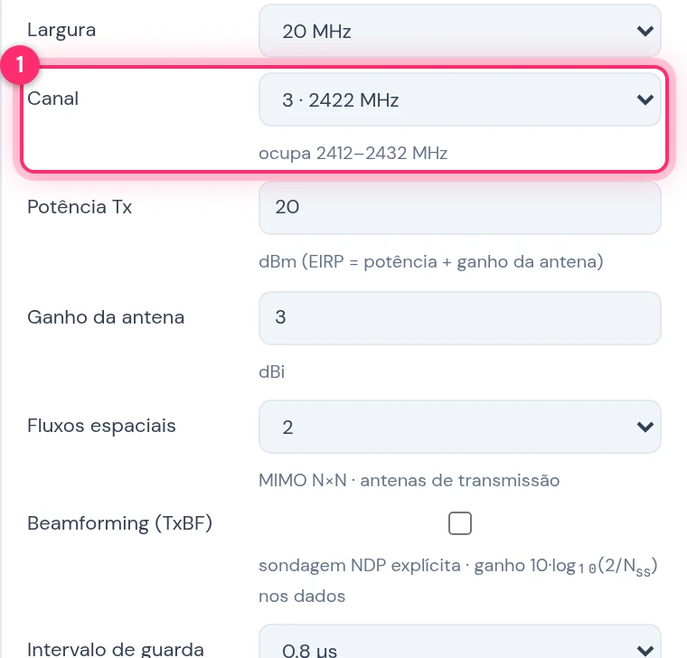
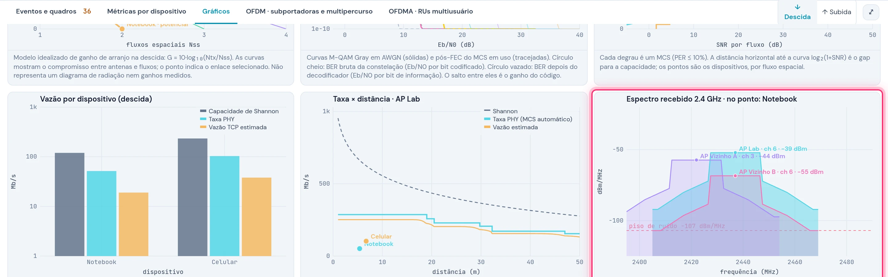
| Configuração | Ruído + interf. (dBm) | SINR (dB) | Canal ocupado (%) | MCS | Vazão (Mb/s) |
|---|---|---|---|---|---|
| 2,4 GHz · 3 / 6 / 6 | |||||
| 2,4 GHz · 1 / 6 / 11 | |||||
| 2,4 GHz · 6 / 6 / 6 | |||||
| 5 GHz · canais distintos |
Com todos no mesmo canal o CSMA/CA funciona (os APs se ouvem e se revezam); com canais parcialmente sobrepostos eles não se decodificam e a energia vira ruído. Qual dos dois é pior para a SINR? E para a vazão? Use a tabela.
Por que 1, 6 e 11 são os únicos três canais de 20 MHz sem sobreposição em 2,4 GHz? Faça a conta com o espaçamento de 5 MHz entre canais.
8Beamforming
Medir o ganho do beamforming transmitido (TxBF), ver a sondagem NDP no log e entender o compromisso entre antenas e fluxos.
8.1 Montagem
- Monte uma nova rede: um roteador Wi-Fi 6 com 4 fluxos espaciais perto de uma parede lateral, e quatro clientes a distâncias diferentes: notebook 2×2 a ~10 m, celular 1×1 a ~25 m atrás de uma parede de tijolo, desktop Wi-Fi 5 a ~22 m e impressora Wi-Fi 4 a ~18 m.
- Com Beamforming desligado, anote para cada cliente: SINR desc., MCS × Nss, taxa PHY.
8.2 Ligando o TxBF
- Na aba Wi-Fi do roteador, marque Beamforming (TxBF).
- No log, filtre por 802.11 e encontre a sondagem: NDP Announcement → NDP → Compressed Beamforming Report. Quem envia cada quadro? O que vai dentro do relatório?
- Na planta aparecem os lóbulos apontando para cada cliente beneficiado. Abra a aba Enlace de cada um e anote o ganho, as antenas usadas e o overhead da sondagem.
- Preencha a tabela e confira o ganho contra a fórmula. Algum cliente mudou o número de fluxos ao ganhar SNR?
- Por que a impressora Wi-Fi 4 não ganha nada? Leia a dica ao lado da opção no inspetor.
- Reduza o AP para 2 fluxos. O que sobra do ganho para o celular 1×1 e para o notebook 2×2?
- Ligue o mapa de Cobertura. Ele muda com o beamforming? Por que os beacons não recebem esse ganho?
- Em Gráficos → Beamforming · ganho por fluxo, localize o ponto de cada cliente nas curvas de 1 a 4 antenas.
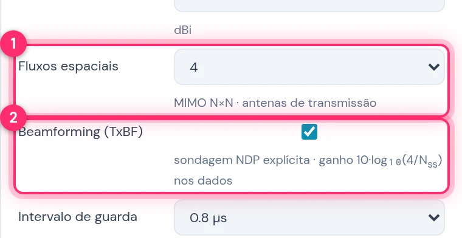
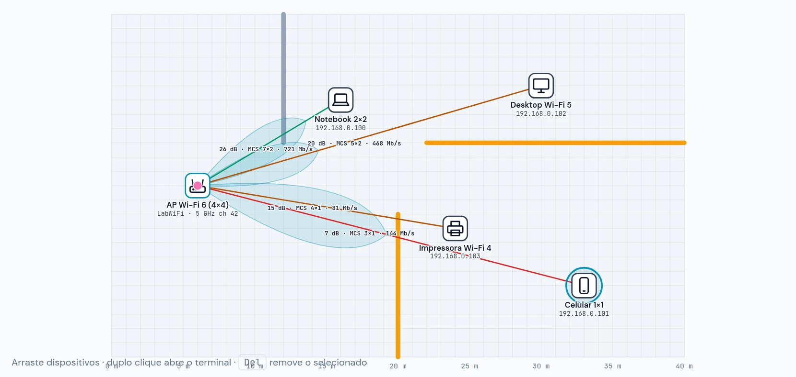
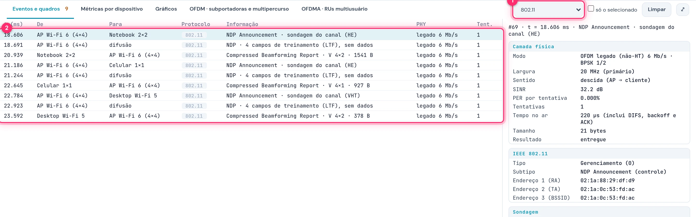
| Cliente | SINR sem BF | SINR com BF | Ganho medido | 10·log₁₀(Ntx/Nss) | MCS × Nss antes → depois | Taxa antes → depois |
|---|---|---|---|---|---|---|
| Notebook 2×2 | ||||||
| Celular 1×1 | ||||||
| Desktop Wi-Fi 5 | ||||||
| Impressora Wi-Fi 4 |
8.3 O arranjo por dentro
- Abra a aula Beamforming. Com 1 usuário, varie Antenas N de 1 a 16 e veja o card de ganho seguir 10·log₁₀N.
- Com N = 8, aumente o Espaçamento de 0,5 λ para 1 λ e 2 λ. Aparecem lobos de grade no diagrama polar — por quê?
- Observe o card Fase dos pesos: uma rampa linear. Mude o ângulo do usuário e confira a inclinação −360°·(d/λ)·sinθ.
- Coloque 2 usuários. Compare pesos MRT e ZF no card de SINR × posição do usuário 2: quando os dois usuários estão quase alinhados, qual técnica sofre mais e por quê?
Beamforming e multiplexação espacial disputam as mesmas antenas. Para um cliente distante, é melhor usar as 4 antenas para 1 fluxo com +6 dB ou para 2 fluxos com +3 dB? Use a sua tabela e a curva de Shannon (ganho logarítmico em SNR × ganho linear em fluxos).
A sondagem consome tempo no ar e o relatório envelhece se o cliente se move. O que limita a frequência de sondagem num celular em movimento? (Relacione com o Doppler e Tc da aula de desvanecimento.)
9Rede mesh
Construir uma malha do zero, entender a escolha de rota pela métrica de tempo no ar e medir o custo de cada salto sem fio.
9.1 Montando a casa
- Comece de uma planta vazia. Desenhe uma casa comprida: paredes de tijolo em x = 12 e x = 26 (deixe uma porta de 6 m em cada), e uma parede de concreto fechando o fundo da casa.
- Coloque o roteador na sala (x ≈ 5). Na aba Mesh, mude o papel para Raiz · gateway e defina o Mesh ID
CasaMesh. Mude o SSID paraCasaMesh. - Na paleta, clique em Nó mesh duas vezes. Arraste o primeiro para o corredor (x ≈ 19) e o segundo para o quarto do fundo (x ≈ 34).
- Note que os nós copiam SSID, segurança e senha da raiz (campos travados), e que a aba LAN & DHCP do nó diz que DHCP, DNS e NAT são da raiz.
- Coloque um notebook no quarto e um celular na sala, ambos com SSID
CasaMesh.
9.2 Rota e backhaul
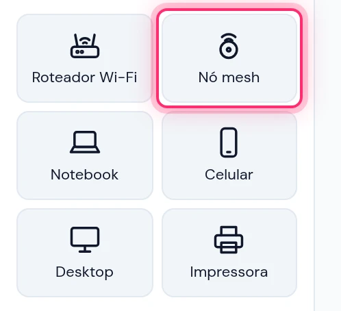
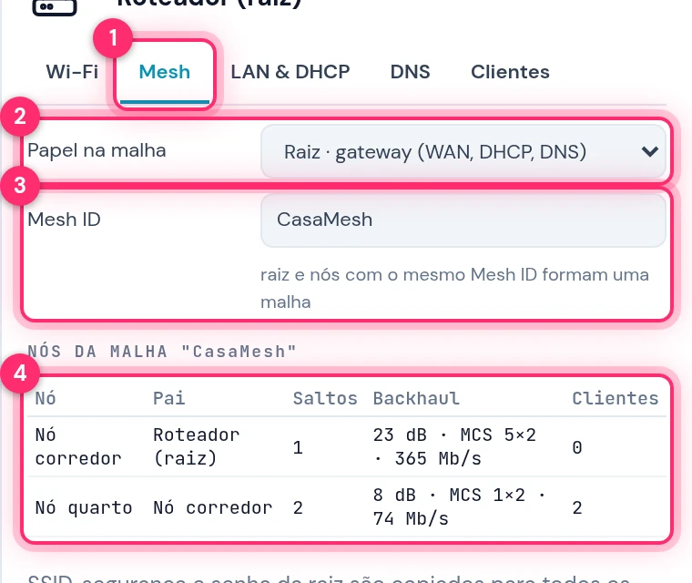
- Na planta, a linha tracejada roxa é o backhaul, com SINR, MCS e vazão de cada salto. Na aba Mesh da raiz, a tabela mostra pai, saltos e backhaul de cada nó. No console da raiz:
show mesh. - O nó do quarto deve ter 2 saltos (passa pelo corredor). Na aba Mesh dele, anote Caminho, Pai escolhido, Vazão nó → raiz e Métrica airtime.
- Calcule à mão C e G a partir da vazão de cada salto e confira.
- No notebook do quarto:
ipconfig /all(quem deu o IP?),tracert google.comeiperf3 -c 192.168.0.1. Por que o tracert não mostra os nós mesh como saltos IP? - Troque o backhaul do nó do quarto para Wi-Fi dedicado e depois para Cabo Ethernet. Rode o iperf3 em cada caso e preencha a tabela.
- Arraste o nó do corredor para longe até ele perder a raiz. O que acontece com o nó do quarto? Leia a mensagem de erro e aproxime de novo.
- Mova o nó do quarto para perto da raiz (sem parede): ele passa a ter 1 salto? A métrica sempre escolhe o caminho de menos saltos?
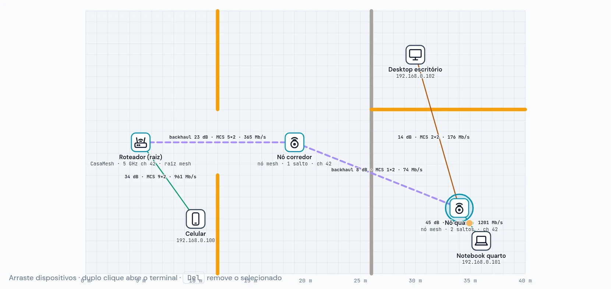
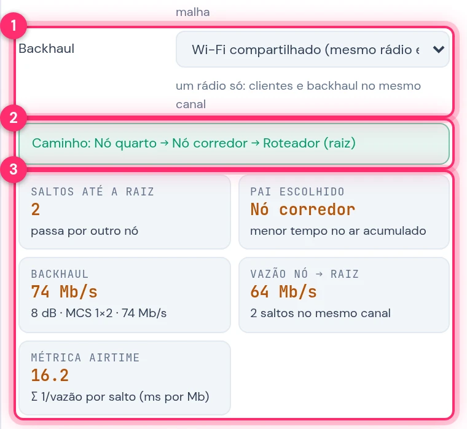
| Backhaul do nó do quarto | Saltos | Vazão por salto (Mb/s) | Vazão nó → raiz | iperf3 notebook (Mb/s) |
|---|---|---|---|---|
| Wi-Fi compartilhado | ||||
| Wi-Fi dedicado | ||||
| Cabo Ethernet | ||||
| Sem mesh (notebook direto na raiz) | — | — | — |
9.3 Roaming
- Filtre o log por Sistema e 802.11 com só o selecionado marcado no celular.
- Arraste lentamente o celular da sala até o quarto. Registre em que ponto (RSSI) acontece cada roaming e para qual nó.
- Depois do roaming, o IP do celular mudou? O DHCP rodou de novo? Por quê?
- Ligue o beamforming na raiz e nos nós. O backhaul também ganha? Confira na linha tracejada.
- Exporte
parte9.jsone compare com o cenário pronto Casa com rede mesh.
Um repetidor de rádio único divide a vazão a cada salto. Mostre com G = 1/(Σ1/gi) o que acontece com 3 saltos de 300 Mb/s e explique por que os kits mesh "tri-band" vendem um rádio dedicado ao backhaul.
Onde você colocaria os nós para maximizar a vazão do quarto: perto da raiz, perto do quarto ou no meio? Justifique com a métrica e teste.
10OFDMA: vários usuários no mesmo símbolo
Ver por que o OFDMA do Wi-Fi 6 ajuda com muitos clientes e pacotes pequenos, e por que não ajuda com downloads grandes.
- Use uma rede com AP Wi-Fi 6 e pelo menos 3 clientes Wi-Fi 6. Selecione o AP e abra a aba OFDMA · RUs multiusuário (só aparece em AP Wi-Fi 6/6E/7).
- Com Pacote = 100 bytes, compare os cards SU-OFDM e OFDMA no plano tempo × frequência. Anote o tempo de ar total de cada um.
- Mude o pacote para 1500 bytes. O ganho do OFDMA cai? Veja o card Tempo de ar × tamanho do pacote.
- Aumente Estações simuladas para 8, 20 e 40. Veja Tempo de ar × número de usuários.
- Troque o Tamanho do RU manualmente (26, 52, 106, 242 tons). Note que 1024-QAM só existe em RU ≥ 242 tons; o card Tempo de ar OFDMA × tamanho do RU mostra o compromisso entre RUs grandes e número de rodadas.
- Alterne ↓ Descida e ↑ Subida. Na subida aparece o quadro Trigger: por que o AP precisa coordenar quem transmite em cada RU?
- Adicione um cliente Wi-Fi 5 à rede. Onde ele aparece na aba OFDMA?
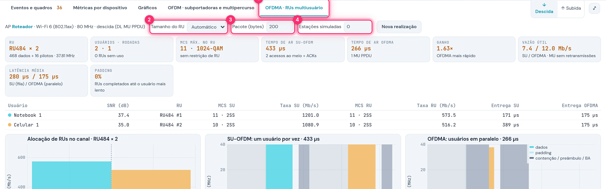
Dê dois exemplos de tráfego real em que o OFDMA faz grande diferença e um em que quase não faz. Use o tempo de ar medido.
11Diagnóstico de falhas
Usar o terminal, o log e a página do roteador para achar defeitos sem olhar a configuração "de cima".
- Abra o cenário Diagnóstico: encontre os 5 defeitos. Regra: para cada defeito, primeiro registre o sintoma e o comando ou quadro que o revelou; só depois abra o inspetor para corrigir.
- Preencha a tabela abaixo.
- Troque de máquina com outra dupla: cada uma estraga a rede da outra com 3 defeitos novos e envia por Compartilhar link, com um objetivo escrito no campo "Objetivo / instruções".
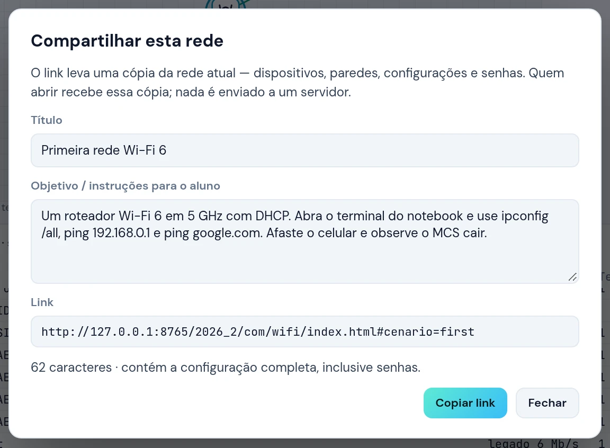
| # | Sintoma | Comando / quadro que revelou | Causa | Correção |
|---|---|---|---|---|
| 1 | Celular não conecta | |||
| 2 | Impressora não responde ao ping | |||
| 3 | Notebook não resolve nomes | |||
| 4 | Desktop recebe 169.254.x.x | |||
| 5 | Tablet pinga o roteador, mas não a Internet |
12Projeto final: escritório de 40 × 24 m
Projete a rede Wi-Fi de um escritório com recepção, open space, 2 salas de reunião com parede de vidro, sala de servidores com parede de metal e área técnica de concreto. Use no máximo 3 equipamentos (roteadores ou nós mesh) e cabo Ethernet só entre dois deles.
Requisitos:
- MCS ≥ 7 em todo o open space e nas salas de reunião (mapa de cobertura "MCS máximo");
- ≥ 200 Mb/s no
iperf3para um notebook em qualquer sala de reunião; - impressora Wi-Fi 4 com IP fixo e nome
impressora.lan; - pelo menos 8 clientes de tipos variados, todos com IP e acesso à Internet;
- uma rede vizinha em 5 GHz já ocupa o canal 42 com 70 % de carga — não a mova.
- Desenhe a planta com os materiais corretos.
- Faça um primeiro posicionamento e ligue o mapa. Justifique cada posição no relatório.
- Escolha banda, canal, largura, fluxos e beamforming de cada equipamento. Justifique com números das Partes 3, 4, 7 e 8.
- Se usar mesh, decida o tipo de backhaul de cada nó e mostre a vazão nó → raiz.
- Meça e apresente: tabela de clientes (SINR, MCS, vazão), prints do mapa SINR e MCS, saída de
iperf3nas salas de reunião. - Gere um link com Compartilhar link e exporte
projeto.json.
★Referência rápida
ipconfig /all · ip a | configuração IP |
ipconfig /release · /renew | libera / renova DHCP |
ping [-n N] [-l bytes] host | teste ICMP |
tracert host · traceroute | rota IP |
nslookup nome [servidor] | consulta DNS |
arp -a | tabela ARP |
netsh wlan show interfaces · iw dev wlan0 link | estado do enlace |
netsh wlan show networks · nmcli dev wifi | redes visíveis |
netsh wlan connect name=SSID key=senha | conectar |
nmcli dev wifi connect SSID password senha | conectar |
iperf3 -c host [-t s] | vazão TCP (servidores: roteador, clientes, iperf.lab) |
show clients · show leases · show wifi · show dns · show mesh
| Material | 2,4 GHz | 5 GHz | 6 GHz |
|---|---|---|---|
| Drywall | 3 | 4 | 5 |
| Vidro | 2 | 4 | 5 |
| Tijolo | 8 | 12 | 14 |
| Concreto | 12 | 18 | 22 |
| Metal | 25 | 30 | 32 |
google.com · ufpr.br · example.com · lseman.github.io · dns.google · iperf.lab
Problemas comuns no simulador
- Painéis vazios ou faixa vermelha no topo: cache misturado — Ctrl+Shift+R.
- Cliente "desconectado" logo após ser criado: o SSID começa vazio; preencha SSID e senha e clique Conectar.
- Cliente não vê a rede: confira se o padrão do cliente suporta a banda do AP (Wi-Fi 6 não enxerga 6 GHz).
- Campos travados num nó mesh: eles vêm da raiz; mude na raiz.
- Aba OFDMA sumiu: só aparece com um AP Wi-Fi 6/6E/7 selecionado (ou associado ao cliente selecionado).
- Valores "presos": veja se a SNR forçada ou um MCS fixo ficou ligado de uma parte anterior.
✓Entrega e avaliação
- Relatório em PDF com as tabelas preenchidas, prints pedidos e respostas às perguntas (numeradas como neste roteiro);
- arquivos
parte1.json,parte3.json,parte9.jsoneprojeto.json; - o link de compartilhamento do projeto final.
| Critério | Peso | O que se espera |
|---|---|---|
| Montagem e protocolos (Partes 1–2) | 15 % | Sequência de quadros correta e explicada; DHCP, DNS e IP estático funcionando. |
| Propagação e link budget (Parte 3) | 15 % | Cálculo à mão próximo do simulador; materiais e bandas comparados com números. |
| SNR → MCS → vazão (Partes 4 e 6) | 15 % | Curva completa; gap para Shannon e fontes de overhead identificados. |
| Formas de onda OFDM (Parte 5) | 15 % | Relação correta entre τrms, Bc, GI, ISI, equalizador e CFO. |
| Interferência, beamforming, mesh e OFDMA (Partes 7–10) | 20 % | Ganhos medidos conferidos com as fórmulas; compromissos discutidos. |
| Projeto final (Parte 12) | 20 % | Requisitos atendidos e cada decisão justificada com medidas. |